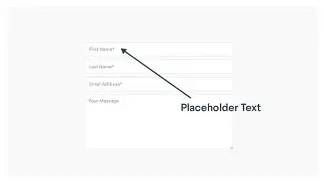
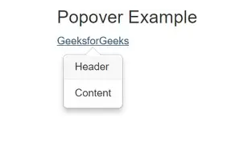

.webp)




Pagination, ou paginação, é uma técnica utilizada para dividir uma grande quantidade de conteúdo em diferentes páginas ou partes menores. Em vez de apresentar todas as informações de uma única vez, o sistema organiza os dados em conjuntos, permitindo que o usuário navegue entre eles.
Um exemplo bastante conhecido ocorre em sites de pesquisa ou lojas virtuais. Em vez de mostrar centenas de produtos na mesma página, o site pode apresentar, por exemplo, 20 produtos por página e disponibilizar botões como:
1 | 2 | 3 | 4 | Próximo
Assim, o usuário pode acessar diferentes conjuntos de resultados sem precisar carregar ou visualizar tudo simultaneamente.
A paginação normalmente funciona dividindo os dados em grupos. Por exemplo, imagine que um sistema tenha 100 produtos e determine que serão apresentados 10 produtos por página.
Nesse caso:
Página 1 → produtos 1 a 10;
Página 2 → produtos 11 a 20;
Página 3 → produtos 21 a 30;
Página 4 → produtos 31 a 40;
e assim sucessivamente.
Em sistemas mais complexos, a paginação pode ser controlada pelo servidor e pelo banco de dados. O sistema solicita somente os dados necessários para determinada página, evitando carregar informações que o usuário ainda não está visualizando.
Um exemplo simples de estrutura de paginação pode ser criado utilizando HTML:
O HTML cria os elementos de navegação, enquanto o CSS pode ser utilizado para definir sua aparência. JavaScript ou uma linguagem no servidor pode controlar qual conteúdo será exibido em cada página.
A Pagination apresenta diversas vantagens, principalmente quando um sistema possui uma grande quantidade de informações. Ela ajuda a organizar o conteúdo em páginas menores, facilitando a navegação e evitando que o usuário precise percorrer páginas excessivamente longas. Além disso, a paginação pode reduzir a quantidade de dados carregados de uma só vez, facilitar a localização de determinadas informações e melhorar a experiência do usuário.
Por ser uma ferramenta útil para organizar grandes volumes de conteúdo, a Pagination é muito utilizada em diferentes tipos de sistemas e sites. Ela pode ser encontrada em lojas virtuais, sites de notícias, sistemas acadêmicos, redes sociais, sites de pesquisa, fóruns, sistemas administrativos, bancos de dados e catálogos de produtos. Dessa forma, a paginação contribui para tornar a apresentação das informações mais organizada, prática e acessível ao usuário.
Placeholder é um texto temporário apresentado dentro de um campo de formulário para fornecer uma orientação ao usuário sobre o tipo de informação que deve ser inserida.Por exemplo, em um campo para nome de usuário, pode aparecer:
Digite seu nome de usuário
Esse texto desaparece quando o usuário começa a digitar.
Os placeholders são bastante utilizados em formulários de cadastro, login, pesquisa, contato e compras.
Em HTML, o placeholder pode ser criado utilizando o atributo placeholder.
Exemplo:
label for="nome">Nome: /label
input type="text" id="nome" placeholder="Digite seu nome">
Nesse exemplo, o texto "Digite seu nome" aparece dentro do campo enquanto ele estiver vazio.
Exemplo prático:
Nesse caso, o usuário recebe uma indicação de como um endereço de e-mail pode ser preenchido.
É importante entender que o placeholder funciona apenas como uma orientação visual. Ele não representa um valor realmente preenchido no campo.
Por exemplo:
O navegador mostra "Digite seu nome", mas esse texto não é enviado como resposta do formulário.
Isso é diferente de utilizar:
Nesse segundo caso, "Digite seu nome" é um valor real do campo e pode ser enviado pelo formulário.
Os placeholders apresentam diversas vantagens na criação de formulários, pois podem orientar o usuário sobre o que deve ser preenchido, mostrar exemplos de preenchimento, economizar espaço na interface, tornar os formulários mais intuitivos e informar o formato esperado de uma determinada informação. Por exemplo:
Nesse caso, o usuário consegue entender rapidamente qual tipo de informação deve ser inserida no campo, tornando o preenchimento mais simples e intuitivo.
Apesar de serem úteis, é importante ter alguns cuidados com o uso dos placeholders. Eles não devem substituir completamente os rótulos (labels) dos campos, pois o label é responsável por identificar claramente qual informação deve ser inserida. Um formulário bem estruturado pode utilizar os dois recursos em conjunto, como no exemplo:
Nesse exemplo, o label identifica o campo como sendo destinado ao e-mail, enquanto o placeholder fornece uma orientação ou um exemplo do formato que pode ser utilizado. Dessa forma, o uso conjunto desses elementos melhora a acessibilidade, facilita a compreensão do formulário e proporciona uma experiência mais clara para o usuário.
Popover é um componente de interface que apresenta uma pequena caixa contendo informações ou ações relacionadas a determinado elemento da página.
Ele geralmente aparece quando o usuário clica, toca ou interage com um botão ou outro elemento.
Por exemplo, um botão chamado "Informações" pode abrir uma pequena caixa contendo uma explicação adicional.
Um popover pode apresentar:
Informações;
Explicações;
Links;
Opções;
Pequenos formulários;
Ações relacionadas a determinado elemento.
Em versões modernas do HTML, é possível utilizar o atributo popover.
Exemplo:
Esta é uma informação adicional.
Exemplo prático.
Antigamente, muitos popovers precisavam ser criados utilizando JavaScript para controlar sua abertura e fechamento.
Atualmente, navegadores modernos oferecem recursos nativos para popovers, permitindo criar componentes básicos sem depender obrigatoriamente de JavaScript.
Mesmo assim, JavaScript continua sendo útil quando é necessário criar comportamentos mais avançados, como:
Alterar o conteúdo dinamicamente;
Fazer consultas;
Controlar diferentes elementos;
Criar animações personalizadas;
Integrar o popover com outros componentes.
Um exemplo prático do uso de um popover pode ser encontrado em um formulário de cadastro. Imagine um campo chamado “Senha” com um botão de ajuda ao lado. Ao clicar nele, aparece um popover informando que “A senha deve possuir pelo menos 8 caracteres”. Assim, a informação ocupa espaço apenas quando é necessária.
Os popovers podem economizar espaço, apresentar informações adicionais, melhorar a organização visual, facilitar a interação e evitar o excesso de informações na tela. Também podem oferecer ações relacionadas a um elemento específico.
Apesar de serem semelhantes, popover e tooltip possuem diferenças. O tooltip geralmente apresenta uma explicação curta sobre um elemento, como “Salvar arquivo”, enquanto o popover pode mostrar informações mais completas e permitir interações, como botões, links e formulários. Por exemplo, um popover poderia apresentar “Opções de salvamento” com diferentes ações disponíveis.